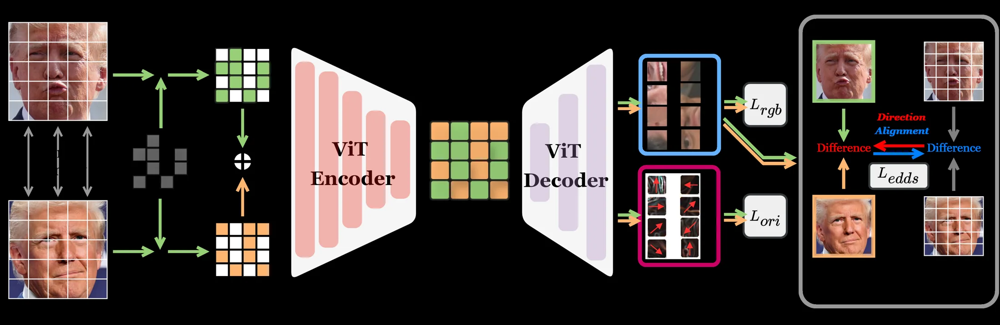

Research project · 2026
DIME: Scaling Self-Supervised Facial Representation Learning via Differential Masked Autoencoding
1 ELLIS Institute Finland and CMVS, University of Oulu · 2 DISI, University of Trento
Abstract
Conventional large-scale visual pretraining shows diminishing returns on fine-grained facial tasks: learning more appearance does not necessarily improve sensitivity to expression, geometry, or local texture changes. DIME reframes masked autoencoding around two observations of the same person. Their shared identity provides a reference, while Explicit Differential Direction Supervision (EDDS) aligns the direction of change between the original and reconstructed pairs. Pretrained on the curated Face-20M dataset, DIME continues to improve as facial data grows to 20 million images, where a standard MAE objective begins to plateau. The resulting single-image encoder transfers across facial action-unit analysis, cross-domain anti-spoofing, facial geometry, parsing, and face generation.
Method
Same-identity pairs are mixed reciprocally at the patch level. A shared encoder with source-isolated attention and complementary decoder branches recovers both faces. RGB reconstruction, gradient-orientation recovery, and EDDS jointly preserve appearance, local structure, and inter-observation variation.

Results
On Face-20M, DIME-B keeps gaining from larger pretraining subsets while a matched MAE-B baseline changes little beyond approximately 6 million images. DIME is evaluated across seven task families.

73.2%BP4D AU macro F1 · DIME-L
5.43%Cross-domain FAS HTER · DIME-L ↓
6.12RAEv2 256px FID at 100K steps · DIME-L ↓

Video
The supplied demo shows facial landmarks, head pose, face parsing, and action-unit analysis on a moving face.
BibTeX
Suggested citation for the 2026 manuscript; update the venue when the formal publication is available.
@article{yu2026dime,
title={DIME: Scaling Self-Supervised Facial Representation Learning via Differential Masked Autoencoding},
author={Yu, Hao and Chen, Haoyu and Wei, Hui and Jiang, Yan and Sebe, Nicu and Zhao, Guoying},
year={2026}
}